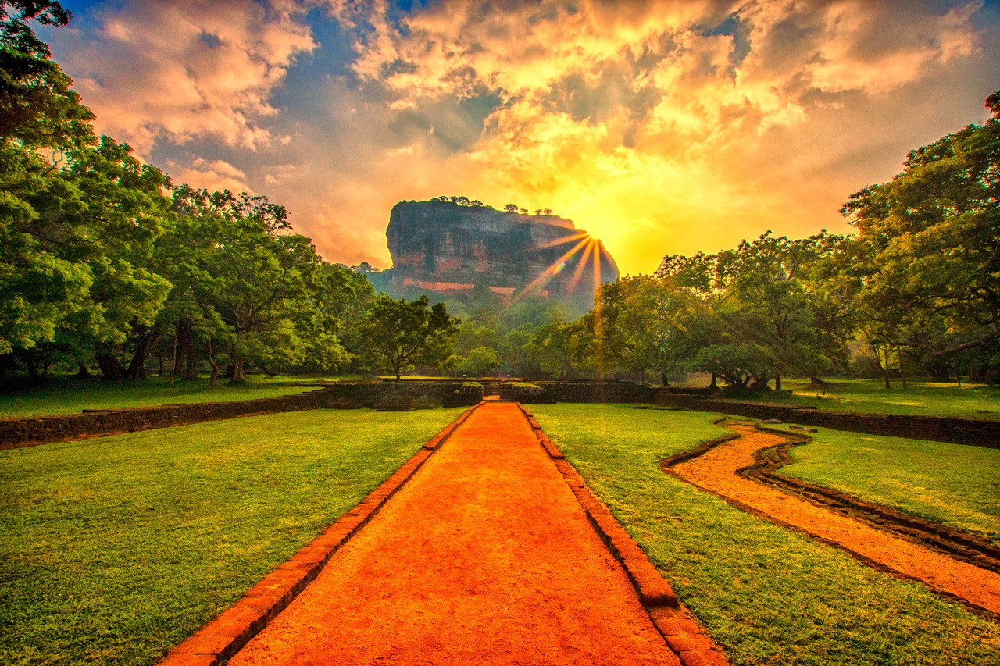
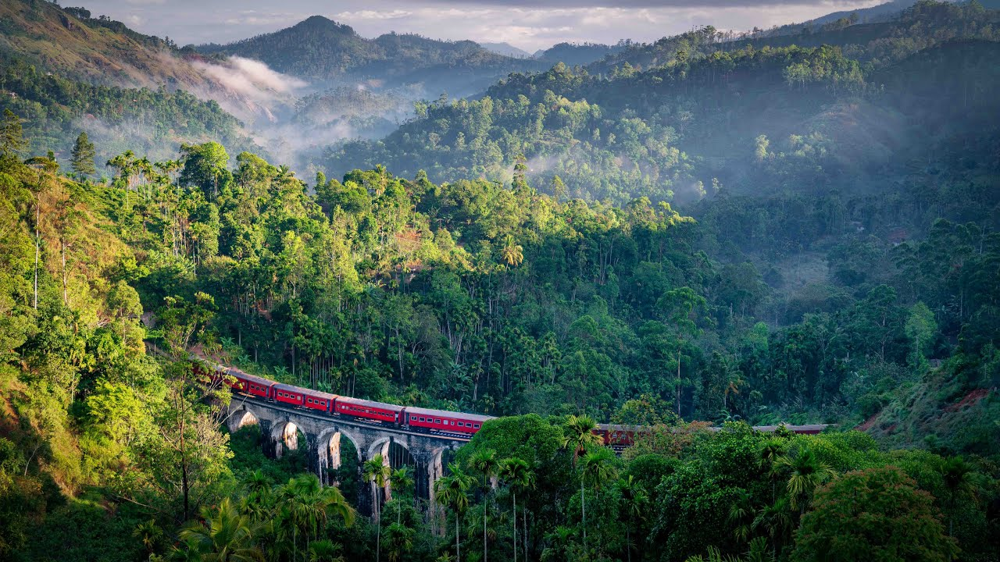
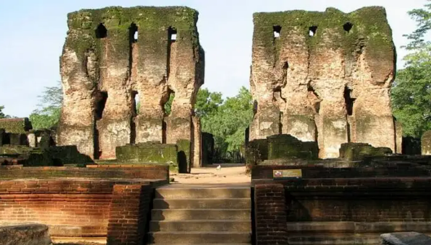
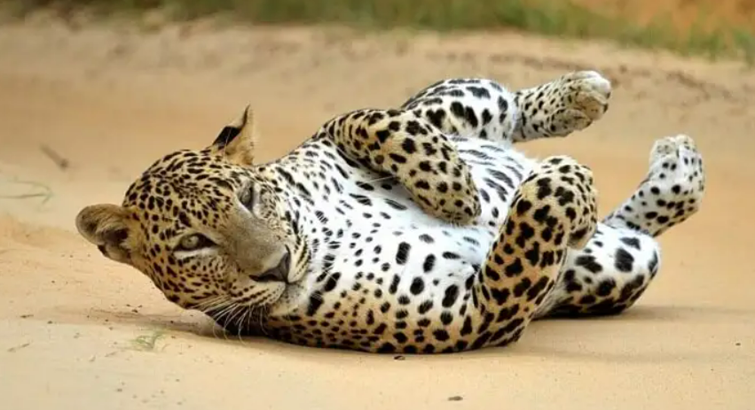
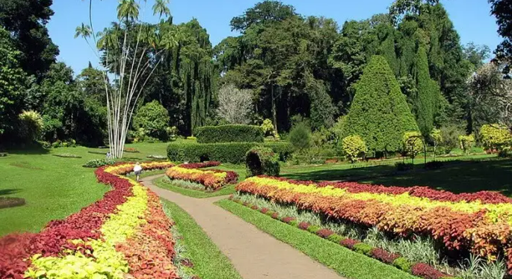

Sigiriya - The Wonder of the Asia

- Sigiriya is an ancient rock fortress and palace situated in Sri Lanka.
- Sigiriya is famous for it's palace ruins on top of a massive 200 meter high rock surrounded by the remains of an extensive
network of gardens, reservoirs and other structures.
- The legendary Lion's Paw Gate, guarding the entrance to Sigiriya's summit, evokes a sense of awe and mystery,
leaving visitors in wonder about its historical significance.
- For more information, visit:
Let's dive in to the wonder of Asia
Ella – Witness The Countryside Charm

- Situated in the middle of beautiful countryside, with small vegetable plots, tea plantations
on the hill slopes and forests on the tops this hill station is nothing less than breathtaking.
- Ella is 235 km from Colombo. You can take a direct train to Ella from Colombo Fort Train Station
- Ella undoubtedly, is one of the most beautiful places to visit in Sri Lanka.
- For more information, visit:
Witness The Countryside Charm in Ella
Polonnaruwa – The Ancient Ruins

- Polonnaruwa is a city that is popular for the temples and this has to be one of the best places to visit in Sri Lanka.
- Well preserved and full of archaeological treasures with hundreds of ancient structures like tombs and temples,
statues and stupas it is difficult to not be amazed by the ruins here.
- This is known to everyone that Sri Lanka is the country of temples and also it has many monuments and heritages
that depict its history and culture.
- For more information, visit:
Dive in to the amazing ruins of Sri Lanka
Yala National Park – Amidst The Wildlife

- Full of grassy plains, forest, lagoons, and coastline, this National Park is no less than a big cat paradise.
- A complete package of natural beauty and heritage, Sri Lankan beautiful places will capture your heart and makes it
one of the must visit places in Sri Lanka.
- This place again comes in the list of the most visited places of Sri Lanka.
It is somewhat 200 km away from the town of Bentota.
- For more information, visit:
Dive in to the wild life of Sri Lanka
Ella – Witness The Countryside Charm

- The spraling 147-acre of garden has 4,000 species of plants and 10,000 variety of trees on display which
is also one of the most relaxing places in Sri Lanka.
- The lush greenery of the garden is invigorating making it a perfect spot for having a picnic with your family.
- There is even a cafetria in the park where you can enjoy local and western cuisine.
- For more information, visit:
Dive in to the beautiful nature of Sri Lanka